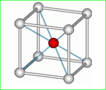
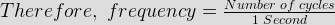

- The numberof atoms per unit cell in a B.C.C structure is
We know that the cubic structure has totally 8 corners. Those 8 corners must have 8 atoms in each corner and there is one atom in the center of the cubic structure. The corner atoms are concentrated on the center atom. Hence, the total number of atoms in a BCC structure is 8. So, the number of atoms per unit cell in a BCC structure is [(1 / 8) × 8 ] + 1 = 2.
 - Class B amplifier is biased
Class B Amplifier operation has zero DC bias and hence the transistors are biased at the cut-off. So, each transistor only conducts when the input signal is greater than the base emitter voltage (VBE).
- Cryogenics is a branch of science dealing with which of the following?
Cryogenics is the scientific study of the working of physical things at very low temperatures. Sometimes it approaches with zero degree temperature level and how such temperatures can be achieved and maintained is the main core of cryogenics.
- What is called the instantaneous value of an alternating current?
The instantaneous value of an alternating current is the value of current at one particular instant. The value may be zero if the particular instant is the time in the cycle at which the polarity of the current is changing. It may also be the same as the peak value, if the selected instant is the time in the cycle at which the current stops increasing and starts decreasing. There are actually an infinite number of instantaneous values between zero and the peak value.
- What is called a cycle in case of AC operation ?
The alternating current changes its magnitude from one instant to another instant continuously with respect to the time interval. Basically the cycle in an alternating current is known as the path of the one half of the positive magnitude and one half of the negative magnitude that starts from the starting point and ends on the ending point.
- Which of the following state capital is not on broad gauge track?
Previously, in Jaipur the broad gauge track is not there. Now the Indian railway department has converted the meter gauge track into broad gauge track.
- Candela is the unit of what?
A common candle emits light with a luminous intensity of roughly one candela. This is how we are calculating the luminous intensity of the light in terms of candela.
- Solid angle is expressed in terms of
The steradian or squared radian is derived from the Greek stereos for solid and the radius for ray and beam. A steradian is related to the surface area of a sphere in the same way a radian is related to the circumference of a circle. A steradian can be defined as the solid angle subtended at the center of a unit sphere by a unit area on its surface.
- A square matrix is called singular if its
If the determinant of a square matrix is zero, then it does not have a matrix inverse. That means the matrix is said to be singular.
- In a series resonant circuit impedance is
In a series resonant circuit, the inductance and capacitance cancels with each other and now the total impedance is equal to the resistance because the overall impedance changes with a particular frequency that the inductor and capacitor approaches each other in that same frequency. And thereby the XC goes to the negative region and the XL still stays in positive region. Then it is clear that XL + XC must head towards zero in this frequency range. At this frequency the impedance of the circuit has its smallest magnitude.
- In single phase rotary converter the number of slip rings will be
The single phase power supply has two terminals that are phase and neutral. So, two slip rings are enough to provide the power supply to the single phase rotary converter.
- What is time period T?
We know that the magnitude of the alternating quantity varies continuously from the starting point of the positive cycle to the ending point of the negative cycle. So, the required time to complete this one full cycle is called as time period T.
- What is called the frequency in AC operation?
Basically, the frequency is nothing but the completed cycles per second.
 - What is the relation between time period T and frequency?
We know that the frequency is the completed cycles per second. So, the time is inversely proportional to the frequency
- What is referred as the average value in AC opearation?
The average value of an alternating quantity is the average of all the instantaneous values during one alternation. Since the alternating quantity increases from zero to peak value and decreases peak value to zero during one alternation. So, the average value must be some value between those two limits. We can determine the average value of an alternating quantity by adding together a series of instantaneous values of the alternation from 0° to 180° and then dividing the sum by the number of instantaneous values used. That computation would show that one alternation of a sine wave has an average value equal to 0.636 times the peak value.
- What is form factor?
The form factor of an alternating current waveform (signal) is the ratio of the rms (root mean square) value to the average value. Here the average value is the mathematical mean of absolute values of all points on the waveform.
- Select the wave that has the least value of form factor.
In square wave, the rms value and average value are same (whatever peak magnitude presents in that square wave). So, the form factor is equal to 1. But, in other kind of waveforms (for example, sine, triangle, rectangle, etc), the average value is less than the rms value. So, the value of form factor is greater than one. Hence, as compared to other waveforms, square wave has least value of form factor.
- What is the frequency of domestic power in India?
The British system tells that the domestic power supply range is 230 Volts, 50 Hz. The American system tells that the domestic power supply range is 110 / 120 Volts, 60 Hz. Since, we are following the British standard and thus the frequency of the domestic power in India is 50 Hz.
- What is apparent power in AC operation?
In an AC circuit, the product of rms voltage and rms current is called as the apparent power. When the impedance is pure resistance, the apparent power is same as the real power. But, when the reactance is added, then the apparent power is greater than the real power.
- What is the real power in AC operation?
We know that the product of the voltage and current is called apparent power and the product of the voltage, current and power factor is called as the real power. Hence, the real power is equal to the product of the apparent power and the power factor.
Design with  by SARU TECH
by SARU TECH
www.sarutech.com
Content Credited to electrical4u.com
Online Electrical Engineering Study Site